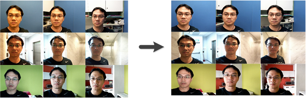
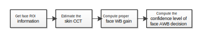

Face color is usually impacted by global white balance gain, such as the influence of a pure color background, mixed light, or a misleading color zone. The AWB face-assist scene analyzer (FA SA) improves inconsistent use of face color and avoids misleading color by collecting Bayer grid stats from a face region of interest (ROI) to estimate skin type and compute a white balance gain.

Face-assist is one of the scene analyzers used in the AWB process, as shown in the following diagram. The FA SA uses face ROI coordinates to distinguish which stats come from a face. It computes an AWB target point and associated confidence level which the decision aggregator (DA) includes in the computation of the final AWB decision. In addition, when FA SA is enabled, the temporal portion of the AWB process uses a much slower convergence speed to keep transitions smooth.

The FA SA module performs the following steps:
